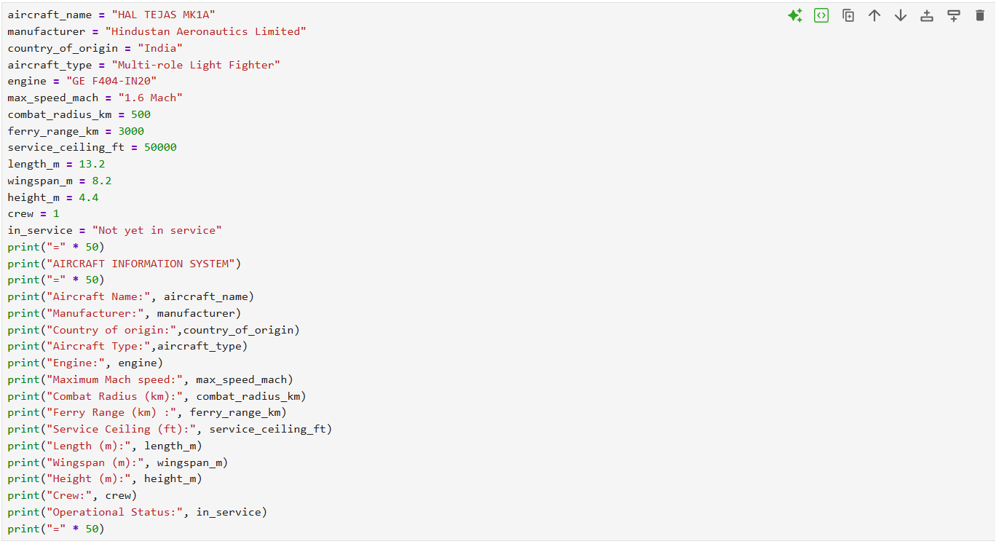

Aircraft Information System – HAL Tejas Mk1A
Category: Python Programming
Difficulty: Beginner
Status: Completed
Tools Used: Python, Jupyter Notebook, GitHub
Version: 1.0
1. Project Overview
Aircraft Information System is a beginner-level Python project developed to organize and display technical specifications of the HAL Tejas Mk1A fighter aircraft. The project demonstrates how programming concepts can be used to store and present aerospace-related technical information.
2. Objective
The main objective of this project was to understand the application of Python fundamentals by creating a simple aircraft information database.
3. Technologies Used
- Python
- Jupyter Notebook
- GitHub
4. Python Concepts Used
- Variables
- Data Types
- String Handling
- Print Function
- Data Organization
5. Complete Python Source Code
Paste your complete Python code here.
6. Code Screenshot

7. Program Output Screenshot

8. Learning Outcomes
- Understanding Python programming fundamentals
- Learning how to organize technical data
- Applying programming concepts to aerospace applications
- Improving technical documentation skills
9. Future Improvements
- Add graphical user interface (GUI)
- Include multiple aircraft databases
- Add search and filtering features
- Connect with external aviation databases